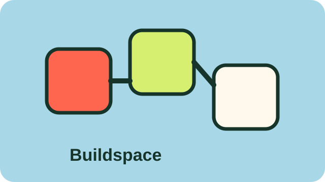

Spring 2024: Finding Stuff
The earliest spark: identifying textile waste pain points, gathering community stories, and noticing how much value is hidden in unwanted clothing.
At DreamStill, sustainability is not just a technical goal—it's a cultural and emotional journey. We're here to help people rediscover joy, agency, and care through the clothes they wear and the communities they belong to.
A timeline of prototyping, community learning, research partnerships, and product development.
The earliest spark: identifying textile waste pain points, gathering community stories, and noticing how much value is hidden in unwanted clothing.

DreamStill's first solution came through hands-on circular fashion experiences: swaps, styling sessions, and resale pathways.

The team refined the venture, tested assumptions, and shaped a stronger product narrative through startup development.

Sorty became a working app concept: computer vision, condition questions, pathway recommendations, and location mapping.

Community activations expanded the mission with practical textile education, joyful gathering, and local circular fashion services.

DreamStill deepened work with ecosystem partners, including moments connected to Kelowna Fashion Weekend and UBC Slow Fibre Research Cluster.

Sorty moves toward launch as a practical decision-support tool for individuals, municipalities, and circular textile systems.
DreamStill is guided by creative rigor, community accountability, and an insistence that clothing deserves better endings.
Building clean technology that turns textile decisions into clear, fast, actionable next steps.
Showing up with honesty, imagination, and lived connection to fashion, culture, and climate work.
Prioritizing reuse, repair, resale, and recycling so garments stay in use longer and out of landfill.
Working across communities, municipalities, research networks, and industry to build circular systems.
DreamStill is led by founders bringing startup strategy, community engagement, environmental governance, and creative practice together.

The innovative Co-Founder of DreamStill Technologies with a background in startup development and strategic planning. Khushi has successfully co-led social justice and creative expression initiatives by fostering team collaboration, securing funding, and executing growth strategies.
Known for accelerating non-profit growth and boosting workplace productivity by managing schedules, promoting EDI, and leveraging project management tools. Specialized in elevating organizational visibility through impactful community engagement initiatives.

Brazilian environmental professional, actor, poet, and co-founder working in both climate technology and Indigenous governance. She is the founder of DreamStill Technologies, where she is developing AI-driven solutions to address textile waste and advance circular systems in fashion.
Alongside her entrepreneurial work, she serves as a Regulatory Engagement Coordinator with the Gitga'at First Nation, supporting environmental decision-making and navigating complex regulatory processes between industry, government, and community.